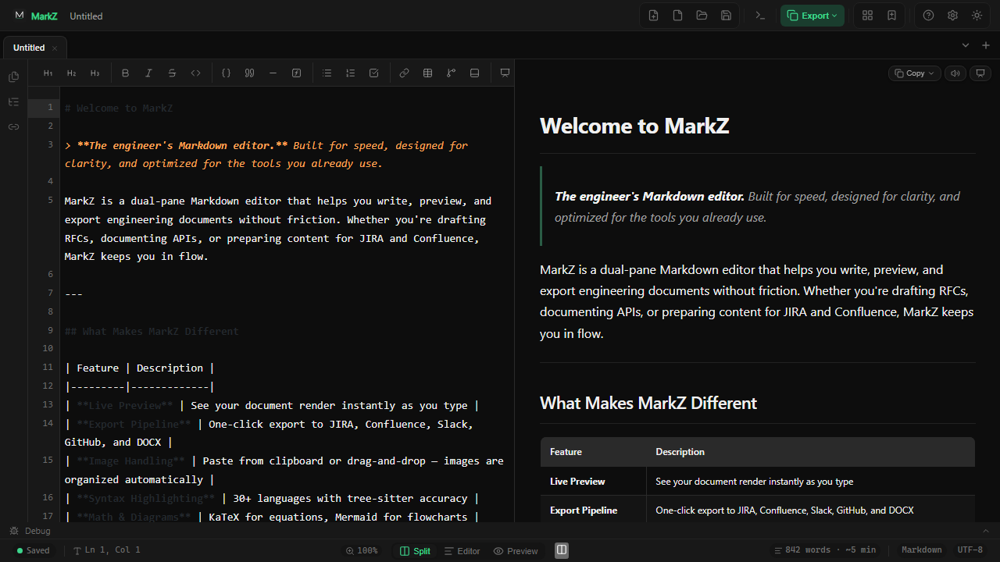
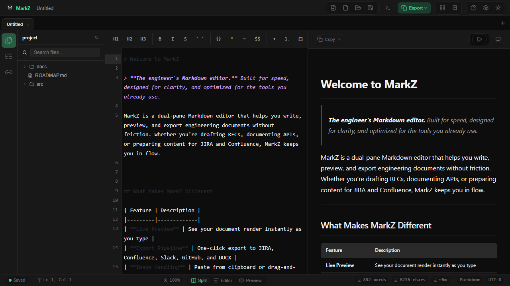

Fast, offline-first, and purpose-built for technical writing. Live preview, multi-format export, engineering templates, presentation mode, and a VS Code-style workspace. No cloud, no telemetry, no distractions.


Open any folder and browse the recursive file tree with project-wide search.
Built from the ground up for engineers who write RFCs, ADRs, design docs, and runbooks. No bloat, no cloud lock-in.
Side-by-side editor and rendered preview with instant updates. KaTeX math, Mermaid diagrams, syntax highlighting, and heading-based scroll sync.
Copy or export to JIRA, Confluence, Slack, GitHub, HTML, and DOCX. Pandoc integration for Word, PDF, and EPUB. AST-first conversion ensures consistent output.
Open any folder and browse the recursive file tree. Project-wide search greps across all .md files. File watcher auto-refreshes on external changes.
Built-in RFC, ADR, Bug Report, Test Plan, PR Description, Meeting Notes, and Weekly Status templates. Save any document as a reusable template.
Link documents with [[Target]] or [[Target|Display]] syntax. Automatic backlink discovery shows incoming references across your workspace.
Double-click any table in the preview to open a grid editor. Add or remove rows and columns, edit cells, and set alignment — all synced back to markdown.
Everything runs locally. No accounts, no cloud sync, no data collection. Your documents stay on your machine, period.
Status bar shows branch and modification status. One-click git diff panel with unified diff view. Full version control awareness without leaving the editor.
Tab-triggered text snippets with placeholders ($1, ${1:default}). Configurable auto-save with debouncing. Full session restore on launch.
Real-time word count, character count, sentences, paragraphs, reading time, Flesch Reading Ease, and Flesch-Kincaid Grade Level — powered by Rust.
Read-aloud with 322 Edge voices or local Windows SAPI5. Streaming playback starts instantly while prefetching chunks in the background.
CodeMirror linter checks for trailing whitespace, empty links, missing alt text, unclosed code blocks, heading jumps, and duplicates. Native browser spellcheck enabled.
CodeMirror's built-in search panel with regex support, case sensitivity, and replace-all. Bound to Ctrl+F for instant access.
Full footnote support across all converters and preview. YAML and TOML frontmatter parsed into structured metadata for document organization.
Dark, light, and system themes with custom CSS injection. Independent content zoom (50–300%) with persistent state. Word wrap, minimap, and line numbers.
Press F5 to turn any Markdown document into a slide deck. Heading-based boundaries, keyboard navigation, progress dots, and touch swipe support.
Print only the preview content via a hidden iframe, excluding all app UI chrome. Forces light-theme colors for readable output with proper pagination.
Rust for performance. Svelte 5 for reactivity. CodeMirror 6 for the editing experience.
Everything at your fingertips. No mouse required.
Free and open source. No sign-up required.